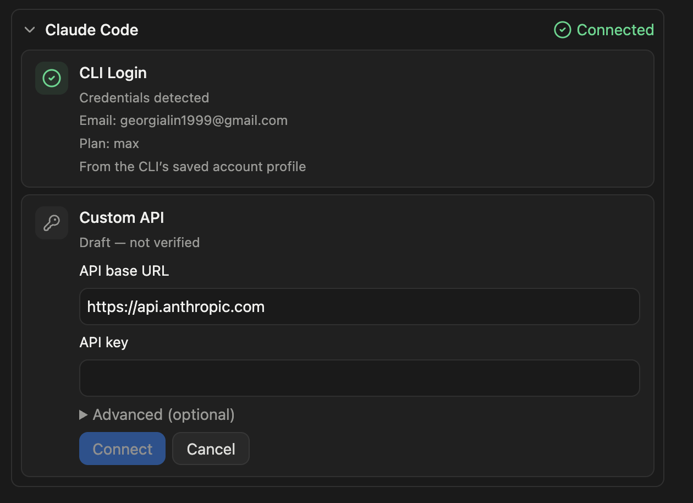
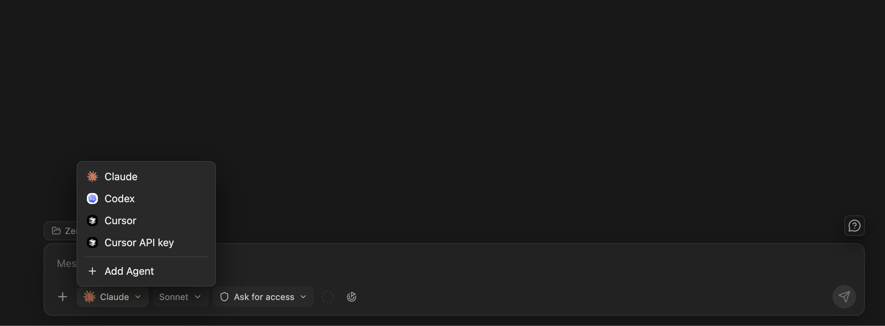
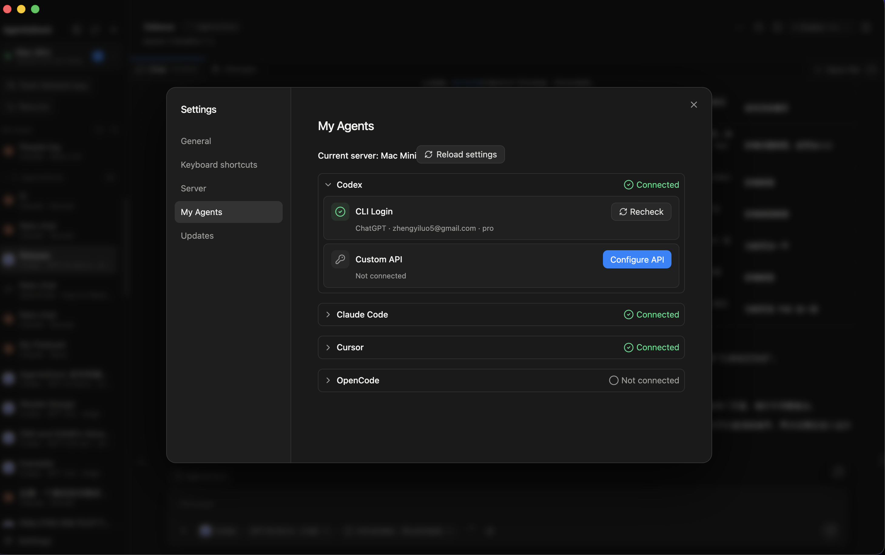

文件
連線與管理 agents
AgentsDock 支援在你連線的伺服器上使用 Claude Code、Codex、OpenCode 和 Cursor。連線 provider 有兩種方式：在伺服器上使用 provider 自己的 CLI 登入，或者為這個 provider 設定自訂 API endpoint。
支援的 provider
兩種連線方式
- CLI Login 使用安裝在遠端伺服器上的 provider CLI 或 runtime。
- Custom API 使用你為目前伺服器設定的 endpoint 和 token/key。
CLI 登入
請在執行 AgentsServer 的那臺機器上執行登入指令。provider 完成登入後，回到 AgentsDock 重新檢查對應 provider。
# Claude Code
claude auth login
# Codex
codex login
# OpenCode
opencode auth login
# Cursor
cursor-agent login- Claude Code 會在下一次傳送訊息時確認登入；重新檢查只驗證 CLI 是否安裝。
- Codex 使用儲存在這臺伺服器上的 Codex CLI 登入。
- OpenCode 使用
opencode auth login登入你在 OpenCode 裡選擇的模型 provider。 - Cursor 的指令可能是
cursor-agent或agent，以你伺服器上安裝的指令名為準。
如果某個 provider 仍顯示 Not connected，先確認你正在看正確的伺服器，然後在對應卡片裡點 Recheck。
Custom API
如果你想讓 AgentsDock 使用 endpoint，而不是 provider 預設的 CLI 登入，可以使用 Custom API。自訂 endpoint 通常需要 API base URL 和 API key 或 token。有些 provider 還會在進階選項裡提供 protocol、model、auth header 等欄位。

- Claude Code 的 Custom API 使用 Anthropic-compatible endpoint。
- Codex 在它自己的 provider 卡片裡提供對應的 API 設定。
- OpenCode 的 Custom API 支援 Anthropic、Chat Completions 和 Responses-compatible endpoint。
- Cursor 的 Custom API 使用 Cursor API endpoint 和 Cursor API key。
Custom API 設定儲存在目前伺服器上。如果你有多臺伺服器，需要在每臺想使用它的伺服器上分別設定。
在對話中使用
provider 連線好以後，新建對話，在左下角的 provider picker 裡選擇它。AgentsDock 會顯示目前伺服器上所有已經可用的 provider，所以切換伺服器後清單可能會變化。如果同一個 provider 同時有 CLI 登入和自訂 endpoint，自訂 endpoint 會作為一個獨立選項顯示，不會和 CLI 登入混在一起。

管理 agent 狀態
開啟 Settings → My Agents 可以檢視目前伺服器上哪些 provider 已連線。這個頁面按伺服器分別設定：如果你切換到另一臺伺服器，可用的 provider 也可能不同。
